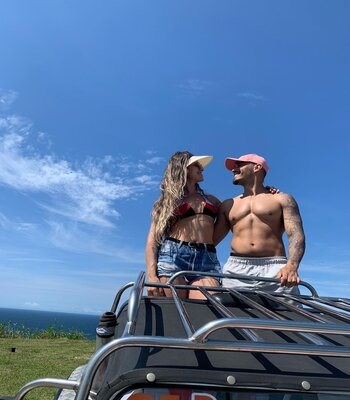

Você mudou a minha vida!
E mais um dia 15, meu amor. O tempo tem passado tão rápido que tá difícil dar conta de tudo o que vem acontecendo nas nossas vidas. Parece que foi ontem que nos conhecemos, que nos tornamos amigos, que demos o primeiro passo pra esse abismo profundo que conhecemos como amor.
A cada mes que passa eu tenho a certeza de que se eu pudesse voltar no tempo, voce seria a minha escolha todas as vezes. Nao consigo pensar em uma esposa, uma amiga, uma companheira tão boa pra viver a minha jornada.
Pra mim é impossível nao sorrir todos os dias, afinal eu acabei casando com a pessoa que se tornou a minha melhor amiga. É com voce que eu vivo bem, com quem eu sonho e realizo. É com voce que eu tenho os meus planos traçados para o futuro.
Minha linda, farei sempre questão de nesse dia colocar em palavras sempre tudo o que sinto por voce, tudo o que eu observo em voce eu expresso em um texto. Quando chega nesse dia eu sinto vontade de comemorar seja de forma simples ou caprichada, por que é mais um mes que temos uma vitoria como casal, mais um mes que podemos dizer: estamos dando certo como casal.
Sempre ouvi dizer que a paixão dos primeiros dias fica só la, nos primeiros dias... Entao eu posso afirmar com toda a certeza, estou apaixonado por voce desde o dia que te conheci, até hoje essa paixão nos acompanha e transborda em forma de amor.
Pra mim o meu maior presente é te ver todos os dias e enxergar no seu olhar a alegria de ter a companhia de alguém especial e que te ama verdadeiramente, te respeita e te admira, reconhecendo tudo aquilo que um faz pelo outro.
Vou parando por aqui por que nao posso gastar todos os meus charmes nas palavras, ainda tenho uma vida toda pela frente pra te escrever textos pra te lembrar todos os dias que voce escolheu o homem certo pra sua vida ❤
Para todo o sempre, SEU AMOR.